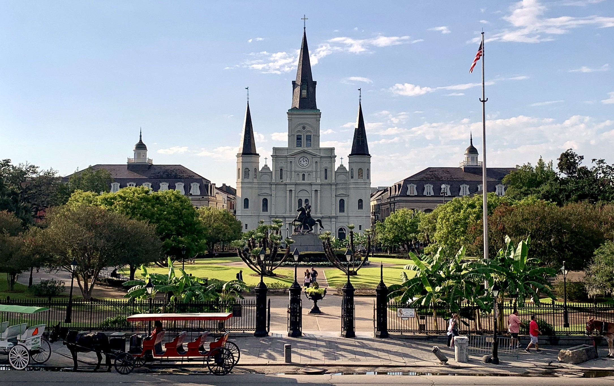

NEW ORLEANS, LOUISIANA · OCTOBER 14–19, 2026
Six days. All that jazz.
October 14–19. A family trip for four.
Good food. Live music. Time to spare.
29.95° N / 90.07° W
YOUR NEW ORLEANS FIELD GUIDE
YOUR NEW ORLEANS FIELD GUIDE

NEW ORLEANS, LOUISIANA · OCTOBER 14–19, 2026
October 14–19. A family trip for four.
Good food. Live music. Time to spare.